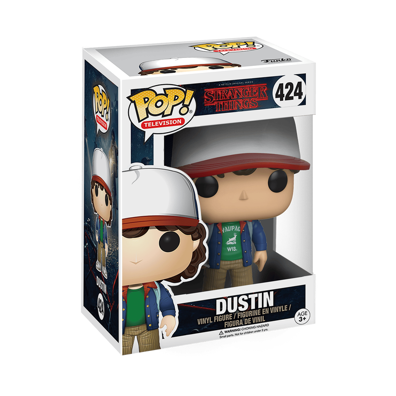
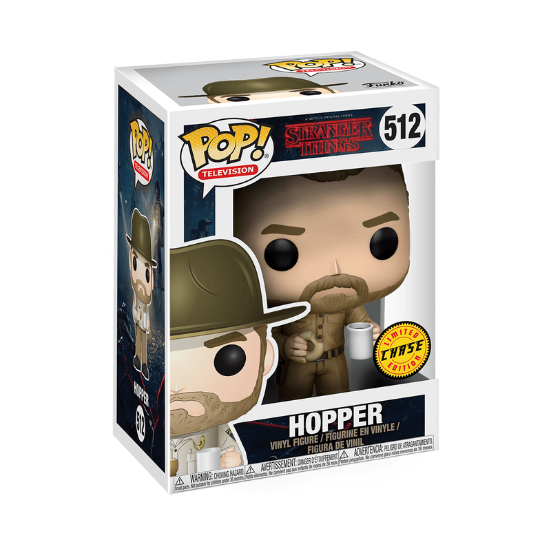
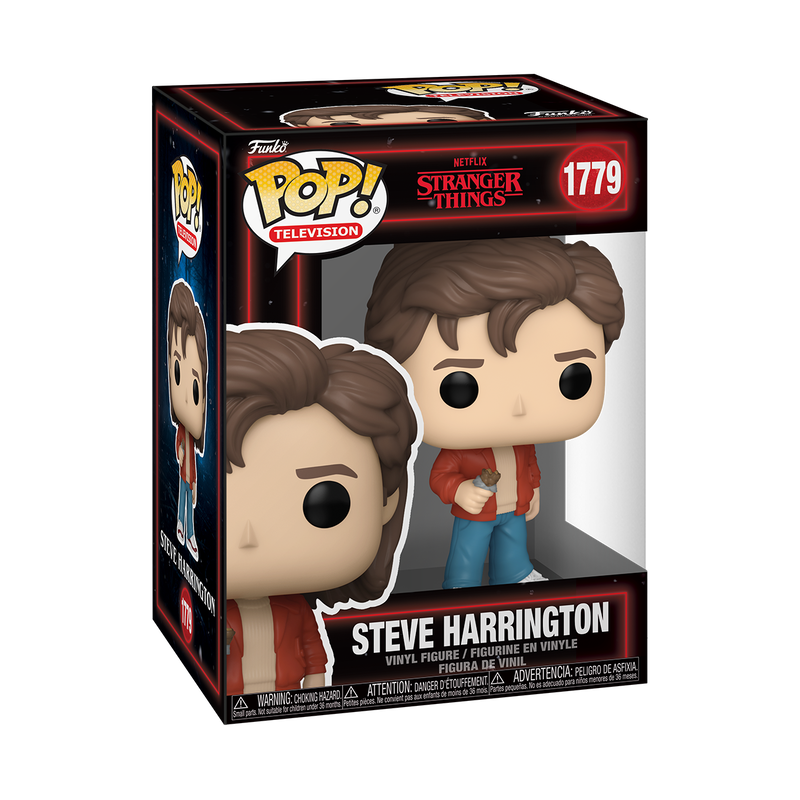
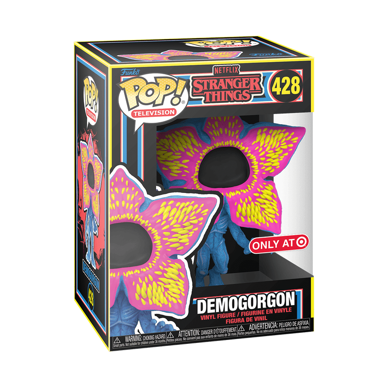
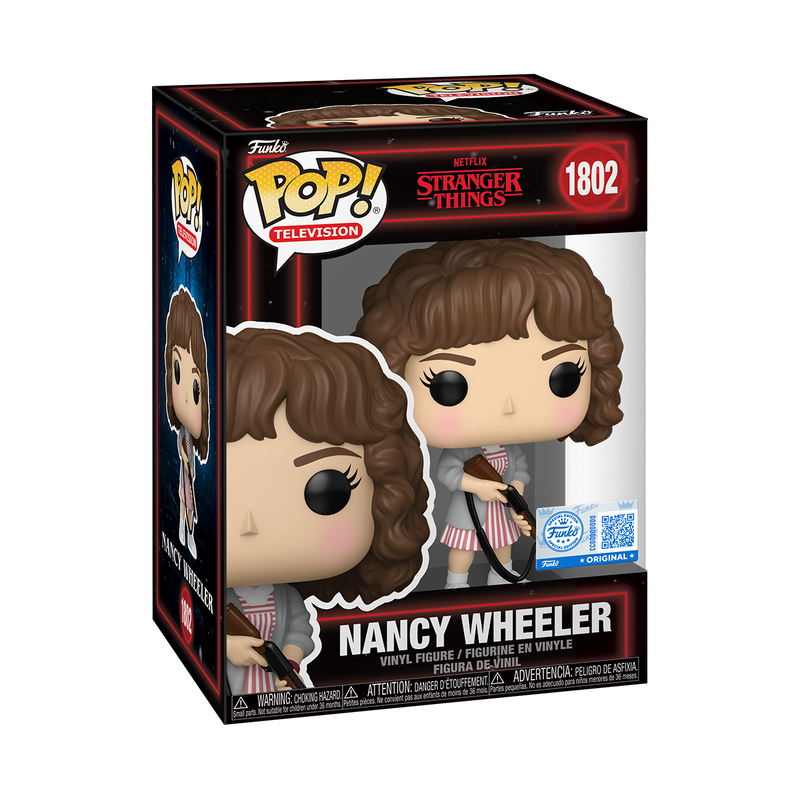
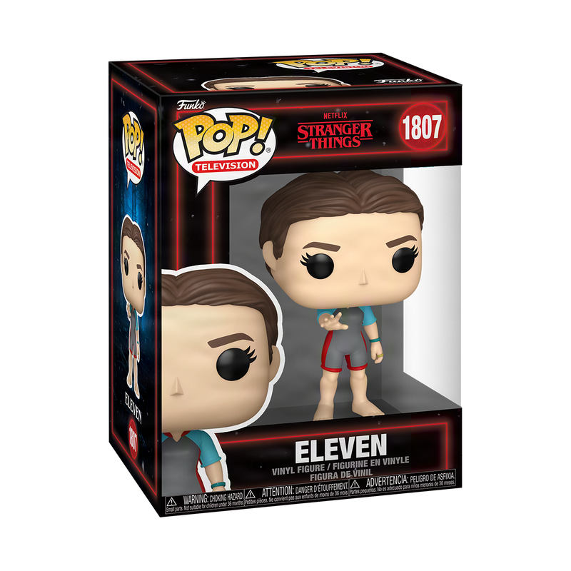

My Collection of Funko Pops
This is my collection of Stranger Things Funko Pops inspired by one of my favorite shows. Each figure represents a charater or moment that I love and makes me feel connected to the story. Since I wasn't allowed to collect things as a kid having the freedom to collect things that I enjoy now means a lot to me. My collection is a way to express my interests, show my love for Stranger Things, and surround myself with things that bring me joy.

Dustin #424
Collector | Funko | 424 | Stranger Things
My Dustin # 424 Funko Pop is important to me because it represents both a character I love and the joy of being able to collect things that make me happy. Stanger Things is one of my favorite shows, and Dustin has always been my favorite character. I love watching him grow from someone who was bullied into someone who if confident, knows his worth, and doesn't let other people's opinion define him. Since I wasn't allowed to collect things as a kid being able to collect things I love now feels especially meaningful. This Funko Pop isn't just a figure on a shelf it's a reminder that I can embrace my interests and find joy in things that matter to me.

Hopper #512
Collector | Funko | 512 | Stranger Things
My Hopper #512 Funko Pop represents a character whose love and protectiveness means a lot to me in Stranger things. Even though he can seem tough and stubbon his caring side shows in how he becomes a father figure to Eleven and helps protect the kids. I admire how he lets people into his life and finds a family worth fighting for. He doesn't always know the right thing to say, but his actions show how deeply he cares. This figure reminds me that being strong also means being there for people who need you.

Steve #1779
Collector | Funko | 512 | Stranger Things
My Steve Harrington Funko Pop represents one of my favorite examples of character growth in Stranger Things. I love how he changes from someone who is self-absorbed and focused on popularity into someone who genuinely cares about others. Watching him look after the kids and put himself in danger to protect them shows how much he has grown. His friendship with Dustin especially brings out a caring side that makes his character meaningful to me. This figure reminds me that people can change and become better through the choices they make.

Demogorgon #428
Collector | Funko | 428 | Stranger Things
My Demogorgon #428 Blacklight Funko Pop represents the creepy and mysterious side of Stranger Things that makes the show so exciting to me. The Demogorgon reminds me of the danger the characters face and how they come togetherr to protect eachother. I love how the blacklight colors give this figure a different look making something scary feel colorful and fun. It stands out in my collection and represents my love for the show and the joy of collecting things that reflect my interests.

Nancy #1802
Collector | Funko | 1802 | Stranger Things
My Nancy Wheeler #1802 Funko Pop represents a character whose courage and determination I admire in Stranger Things. I love how Nacy grows into someone who stands up for herself and refuses to back down when the people she cares about are in danger. She is willing to look for answers and face difficult situations instead of letting fear stop her. Her intelligence and protective side make her more than just another character for me. Having her in my collection celebrates those qualities and my love for the show.

Eleven #1807
Collector | Funko | 1807 | Stranger Things
My eleven #1807 Funko Pop represents a character whose strength and growth mean a lot to me in Stranger Things. I admire how she learns to embrace who she is and find her own voice after others tried to control her life. What makes her special to me is not just her powers, but how much she cares about her friends and family she finds along the way. Her journey reminds me of the importance of belonging without having to change who you are. This figure reminds me that being different doesn't make you any less deserving of love and friendship.